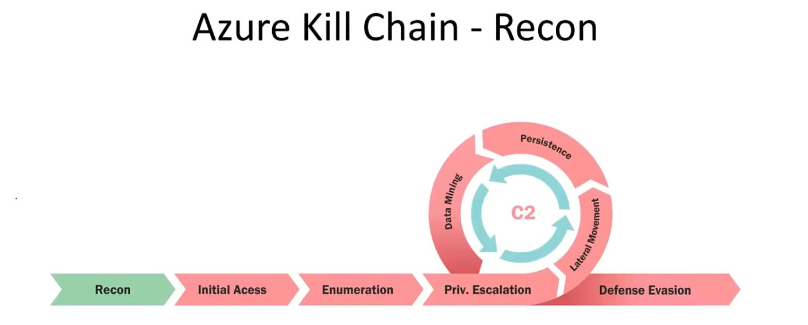

Foundational Mastery of Azure and Microsoft Entra ID for Security Architecture
Foundational Architecture and Governance in the Microsoft Cloud
Mastery of the Microsoft cloud environment begins with a clear understanding of the architectural separation and interaction between the identity control plane (Microsoft Entra ID) and the resource control plane (Azure).
The Microsoft Entra ID Identity Plane: Definition, Renaming, and Scope
Microsoft Entra ID, the modern Identity Provider (IdP), serves as the centralized identity and access management (IAM) solution for the entire Microsoft ecosystem and beyond. Azure, by contrast, is the comprehensive cloud platform utilized for consuming infrastructure services such as virtual machines, storage, databases, and serverless functions—the services used to build custom solutions. Entra ID is inherently utilized by Azure specifically for IAM and authentication functions.
The strategic decision to rename Azure Active Directory (Azure AD) to Microsoft Entra ID was driven by several architectural imperatives. First, the change was intended to communicate the product's native multi-cloud and multi-platform functionality, signifying its role beyond the Azure infrastructure platform. Second, it alleviated confusion with the legacy, on-premises Windows Server Active Directory technology, which operates on fundamentally different protocols and architecture.
Entra ID is completely different.
Entra ID is "flat." Think of it as a massive spreadsheet or SQL database of Users, Groups, and Applications. You cannot use tools like Mimikatz to dump hashes from Entra ID in the way you would a Domain Controller. When you attack Entra ID, you are attacking web APIs, manipulating tokens (OAuth/OIDC), or abusing misconfigurations in applications, not exploiting the Kerberos protocol.
It is a massive, flat list of three main things:
- Users: The actual humans (or potential attackers) logging in.
- Groups: Collections of users for easier management.
- Applications (Service Principals): This is crucial. In the cloud, applications are treated like users. They have their own identities and passwords (secrets).
Entra ID speaks the languages of the web: HTTP and REST APIs. It uses modern authentication protocols like OAuth2 and OIDC (OpenID Connect).
Entra ID Licensing Levels (Capabilities & Constraints)
The security posture of a target tenant is dictated by their wallet. Microsoft unlocks specific features based on the license tier (Free, P1, or P2). Identifying this early helps you predict defenses.
Free Tier
- Capabilities: Core identity management, SSO, basic security defaults.
- Attacker View: These tenants lack advanced logging and automated detection. Reconnaissance here is quieter, and complex defenses like Conditional Access are often missing.
Premium P1 (The Corporate Standard)
- Key Features:
- Conditional Access (CA): The "If/Then" engine for logins (e.g., "If User comes from unknown IP, block").
- MFA: Multi-Factor Authentication enforcement.
- Identity Protection: Risk-based detection of compromised credentials.
Premium P2 (The Enterprise Standard)
- Key Features:
- Privileged Identity Management (PIM): Just-in-Time access (roles are activated on-demand).
- Identity Protection: More advanced risk-based policies.
The Core Function of Entra ID
The single job of Entra ID is Authentication. It answers the question: "Is this user who they say they are?"
Entra ID acts as the bouncer for the Microsoft cloud. When a user attempts to log in, Entra ID checks the username, the password, and potentially the MFA status or device health. If the user passes these checks, Entra ID issues a digital ticket called a Token.
This Token is the most valuable artifact for an attacker. It contains claims (facts) about the user, such as their name, email, and the roles they hold. Once Entra ID issues this token, its job is essentially done for that specific login event. It hands the token to the user, and the user then presents that token to other services (like Outlook or Azure) to prove their identity.
Managed Identity
Technically, a Managed Identity is a special type of Service Principal (an Application account) in Entra ID that is tied to an Azure Resource.
The Problem it Solves (User View):
Imagine you are a developer. You built a web app that needs to access a Database. To login to the database, your app needs a username and password (credential).
- Old Way: You write the username/password in a config file or hardcode it in the source code.
- The Risk: Developers accidentally upload these config files to GitHub, and hackers steal the credentials.
- The Managed Identity Solution: Azure creates an automatic identity for the App itself. You tell Azure, "This Web App is allowed to talk to this Database." No passwords exist. The App asks Azure for a token, Azure sees it really is the App, and hands over the token.
The Opportunity it Creates (Attacker View):
A Managed Identity is a "Token Generator" for an Azure Resource. If we compromise an App Service (Web App), we can request tokens for that Managed Identity, essentially becoming that identity. If the identity has high privileges (like Contributor on the Subscription), we inherit that access.
Azure Resource Hierarchy
Understanding the Azure Resource hierarchy is critical because permissions flow downward (Inheritance).
Tenant Root Group (The Source): The absolute highest level of the Azure Resource hierarchy. It sits above all Management Groups and Subscriptions. It mirrors the scope of the Entra ID Tenant.
- User View: You almost never assign permissions here for day-to-day work. This level exists primarily for Compliance.
- Attacker View: This is the "God Mode" of Azure Resources. If you compromise an account with User Access Administrator or Owner rights at the Tenant Root, you effectively own every piece of infrastructure.
Management Groups: These are logical folders used to organize Subscriptions. You can nest them (folders inside folders) to match your corporate structure.
- User View: This allows Shared Governance. Instead of assigning permissions on 50 separate subscriptions, you group them into a Management Group.
- Attacker View: This creates a massive Blast Radius. If I compromise credentials with rights on the "Production" Management Group, I inherit access to every Production subscription.
Subscription: This is the Billing and Access Control boundary. You cannot run a Virtual Machine without a Subscription to pay for it.
- User View: This separates Cost and Environments.
- Attacker View: This is our primary target for Data Mining. Finding credentials for a "Reader" on a subscription is highly valuable.
Resource Group (RG): A logical container. Everything must live in a Resource Group.
- User View: This organizes resources for a specific project or team.
- Attacker View: This is a secondary target. Compromising an RG gives access to all resources within it.
Resource: The distinct object itself. A Virtual Machine is a resource. A specific Network Interface Card is a resource.
- User View: This is the tool you use to do your job.
- Attacker View: This is the Execution Point. Accessing the Resource lets me dump data from the SQL Database.
If you have "Contributor" access on the Subscription, you inherit that access on every Resource Group and Resource beneath it.
Inheritance: This is your best friend as an attacker. If an admin gives you "Contributor" access on a Subscription, you automatically become a Contributor on every Resource Group and every Virtual Machine inside that subscription.
The Two Role Systems (RBAC)
Because Entra ID (Identity) and Azure Resources (Infrastructure) are two different systems, they use two completely different sets of permission roles.
Entra ID Roles (Identity Roles)
These roles control the directory/identity. They define what you can do to users, groups, and applications.
- Global Administrator: The highest privilege. Can manage everything in Entra ID.
- User Administrator: Can create and manage users.
- Application Administrator: Can manage application registrations.
Azure Roles (Resource Roles)
These roles control access to Azure resources (VMs, Storage, etc.).
- Owner: Full access to all resources, including delegating access.
- Contributor: Can create and manage resources, but cannot delegate access.
- Reader: Can view resources but cannot modify them.
How Azure Decides Access (The Logic Flow)
When you attempt an action in Azure (like restarting a server), the system runs a specific logic flow to determine "Yes" or "No."
Access is Additive (The Keychain Rule)
Azure permissions are cumulative. You never lose access by gaining a more restrictive role; you only gain more keys.
- Scenario: Your user account is assigned the Reader role directly. Your user is also a member of the "IT Admins" group, which has the Contributor role.
- Result: You are a Contributor. Azure adds all your permissions together.
- Attacker View: Do not stop enumerating after finding a direct user assignment. You must enumerate every Group the user belongs to.
Azure Attribute-Based Access Control (ABAC)
While RBAC is binary (you have the role or you don't), ABAC allows permissions based on specific conditions.
- The Mechanism: Administrators attach a Condition to a Role Assignment.
- User View: "User Bob is a
Blob Data Reader, BUT only if the Blob has the index tagProject = 'Blue'." - Attacker View: This acts as a Hidden Filter. You may have permissions but still get Access Denied because resource tags do not match the ABAC condition.
The Operator's Toolkit
Because Azure architecture is split into two pillars (Identity and Resources), the tools provided by Microsoft are also split.
Infrastructure Tools (For the "Offices")
These tools interact with the Azure Resource Manager (ARM). You use them to list Storage Accounts, restart VMs, or read Key Vaults.
- Az CLI (az): This is the preferred tool for offensive operations. It is cross-platform (Python-based) and outputs data in JSON format.
- Az PowerShell: This is the standard administrative tool, especially popular with Windows-focused teams.
- Azure Portal: The web-based GUI. Good for learning but slow for enumeration.
Identity Tools (For the "Passport Office")
These tools interact with Entra ID. You use them to list users, groups, or app registrations.
- Mg Graph PowerShell (Mg*): The modern standard for interacting with Entra ID and Microsoft Graph API.
- MS Online (MSOL): The legacy module. Still useful but being phased out.
Phase 1: Discovery and Reconnaissance (Unauthenticated)

In an assumed breach scenario, we typically start with a set of credentials. It is instinctual to log in immediately. Doing so without prior reconnaissance is a strategic error.
The Strategic Value of Unauthenticated Reconnaissance
Bypassing RBAC via Public DNS
The primary reason we perform unauthenticated reconnaissance is to outmaneuver the Azure Role-Based Access Control system. The credentials we possess usually belong to a low-privilege user.
If we log in and attempt to list sensitive resources, such as asking Azure to list all Storage Accounts, the Resource Manager will deny the request because our user lacks specific permissions on those objects.
However, Azure resources must have public DNS records to function on the internet. A Storage Account named secretproject for example creates a publicly resolvable DNS entry like secretproject.blob.core.windows.net. Public DNS servers do not enforce Azure permissions. By identifying these public hostnames from the outside, we effectively locate targets without Azure RBAC blocking us.
Target Identification and Authentication Analysis
Our first objective is to confirm the organization uses the Microsoft Cloud and audit their authentication capabilities.
Active Identification (User Realm Analysis)
We determine the unique Tenant ID and the authentication protocol by analyzing the User Realm. When a user enters their email address into a Microsoft login page, the browser sends a request to the backend API getuserrealm.srf.
However, every Azure tenant must have a default <tenant>.onmicrosoft.com domain. If we query nonexistent@defcorphq.onmicrosoft.com and receive a valid response containing NameSpaceType: Managed (or Federated) and a FederationBrandName, we have positively confirmed the tenant exists.
The API validates the Realm presence before checking the User identity. This allows us to brute-force Tenant Names effectively without fearing account lockouts.
When identifying a target, we must test against the immutable default domain ending in .onmicrosoft.com rather than just the company's vanity domain.
https://login.microsoftonline.com/getuserrealm.srf?login=nonexistent@defcorphq.onmicrosoft.com&xml=1
This screenshot captures a successful execution of the Target Identification technique using the "User Realm" API.
If we query a custom domain like defcorphq.com and receive a NameSpaceType: Unknown response, it does not prove the target is offline. It simply means that specific domain is not registered or correctly federated in Azure.
https://login.microsoftonline.com/getuserrealm.srf?login=nonexistent@defcorphq.com&xml=1
This next step transitions us from manual browser checks to automated tooling using AADInternals.
We are querying the public API to build a profile of the defcorphq.onmicrosoft.com tenant. By using a randomly generated user (nonexistent@...), we ensure we are testing the Tenant's configuration, not a specific user's settings.
Import-Module .\AADInternals.psd1
Get-AADIntLoginInformation -UserName 'nonexistent@defcorphq.onmicrosoft.com'
Positive Tenant Identification
The Federation Brand Name returned Defense Corporation. This is the most important field during initial discovery. It proves that defcorphq.onmicrosoft.com is a valid, active tenant.
Enumerating SubDomains (NetSPI by MicroBurst - Permutation Scanning)
We utilize a brute-force approach called permutation scanning. We take the base name of the target and combine it with common IT nomenclature like backup or dev to generate thousands of potential FQDNs.
Storage Accounts (blob.core.windows.net)
This is the highest value target during recon. Developers often set container permissions to Public Read or Blob for convenience.
App Services (azurewebsites.net)
This domain hosts web applications and APIs. Discovering these allows us to map the external attack surface.
Cloud Services (cloudapp.net)
This is the legacy domain used for older Virtual Machines and Load Balancers.
Enumerating the Tenant ID
While finding the domain name (defcorphq.onmicrosoft.com) is useful, the Tenant ID is the most critical technical artifact you need for attacks involving APIs.
The Tenant ID is a Globally Unique Identifier (GUID). It serves as the primary key for the target's environment within the massive Azure ecosystem.
Method A: The Specialized Cmdlet (AADInternals)
Get-AADIntTenantID -Domain defcorphq.onmicrosoft.com
Method B: OpenID Configuration Extraction
By browsing to the standardized URL https://login.microsoftonline.com/<TARGET_DOMAIN>/.well-known/openid-configuration, we can retrieve a JSON object containing the authorization endpoints.
https://login.microsoftonline.com/defcorphq.onmicrosoft.com/.well-known/openid-configuration
A successful HTTP 200 response here confirms the tenant is active and its Tenant ID. When you visit this URL, look for the endpoint named token_endpoint. The structure of this URL is standardized:
https://login.microsoftonline.com/<TENANT-ID-GUID>/oauth2/tokenThe long hexadecimal string sitting between microsoftonline.com/ and /oauth2 is the Tenant ID.
Enumerating Users Unauthenticated
Attacking invalid email addresses creates failed login logs that alert the Blue Team without generating any value. We must refine our raw list of employees gathered from OSINT into a verified list of valid targets.
Method A: Using AADInternals
We can keep our workflow entirely within PowerShell by using the Invoke-AADIntUserEnumerationAsOutsider cmdlet from the AADInternals suite.
The -Method 'Normal' switch tells the tool to simulate the standard login flow.
Analysis of Results
The output gives us a binary True or False status for every email in our list.
- True confirms the API accepted the username and is waiting for a password or federation redirect. These are valid accounts inside the directory.
- False confirms the user is not found in the directory. We immediately discard these.
Assuming that by doing an OSINT we were able to find a list of some valid users:
admin@defcorphq.onmicrosoft.com
root@defcorphq.onmicrosoft.com
test@defcorphq.onmicrosoft.com
contact@defcorphq.onmicrosoft.comGet-Content .\emails.txt | Invoke-AADIntUserEnumerationAsOutsider -Method 'Normal'
It is possible to find out that we do have 2 valid users inside this Entra ID, which are Admin and test.
Method B: Login Portal Discrepancies
This technique leverages the GetCredentialType API endpoint used during the login process.
- Valid User: The server responds with a state of
0asking for the password or redirection. - Invalid User: The server returns an error state indicating the user was not found in the directory.
We use the tool o365creeper-ng to automate this process.